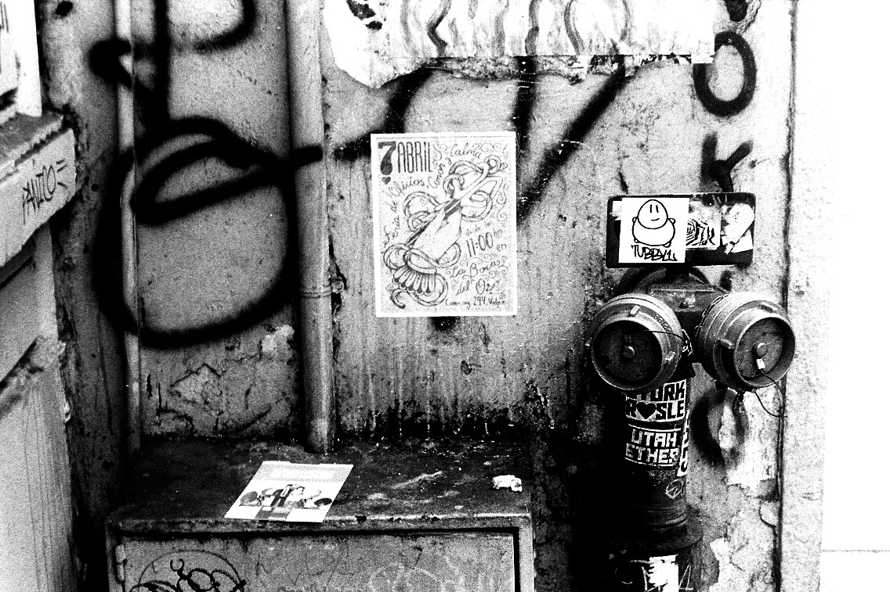

PROYECTOS
A continuación se abordarán tres proyectos realizados a lo largo de mi tiempo en la universidad. Siendo el primero realizado totalmente en conjunto con el Taller de Celebración 2018, el segundo realizado individualmente pero con un fin grupal, y el tercero realizado también individualmente pero en el contexto de un taller.
-
.jpg)
90 AÑOS PUCV
En el contexto de la celebración de los 90 años de la Pontificia Universidad Católica de Valparaíso, el Taller de Acto y Celebración de la Escuela de Arquitectura y Diseño, se hace participe de la realización del brindis para la ocasión.
LEER MÁS -
GIGANTES DE GEA
En el contexto de la semana universitaria de la Escuela de Arquitectura y Diseño de la PUCV, el Taller Topológico Multiescalar se encarga de construir a los gigantes del pasacalles.
LEER MÁS -

VALPARAÍSO
Estudio de Valparaíso realizado a través de la fotografía análoga, observando a través de ella el detalle de esta ciudad. Todo esto en el contexto de un taller extracurricular realizado en la Escuela de Arquitectura y Diseño de la PUCV
LEER MÁS
.jpeg)
DISEÑO DESDE EL CÓDIGO
Sitio realizado como proyecto para el ramo de Diseño desde el Código 2018 de la Escuela de Arquitectura y Diseño de la PUCV.